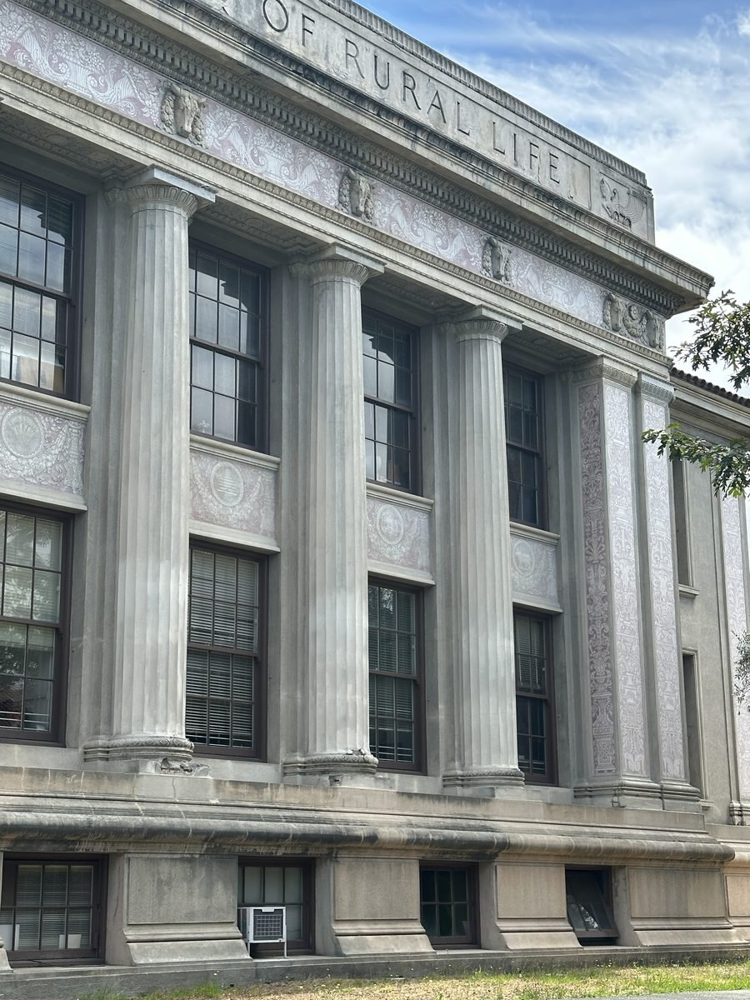
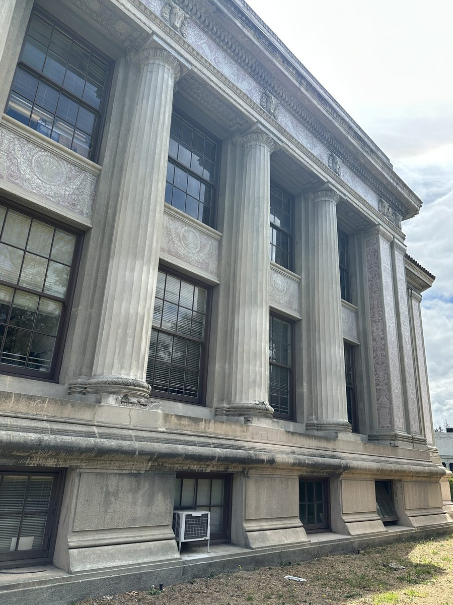
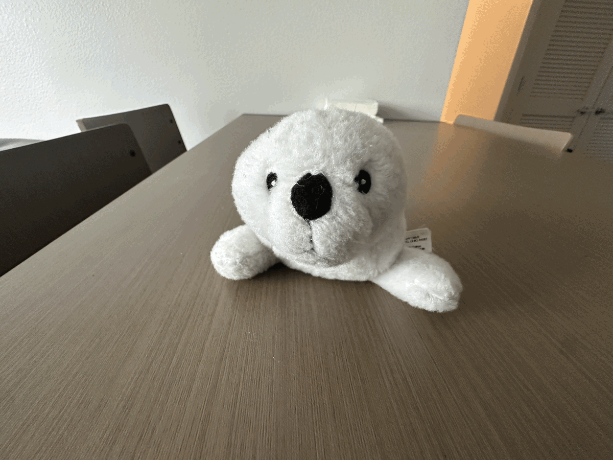
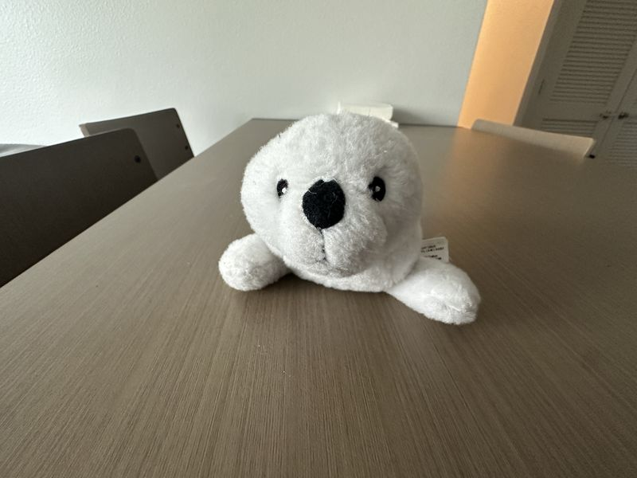
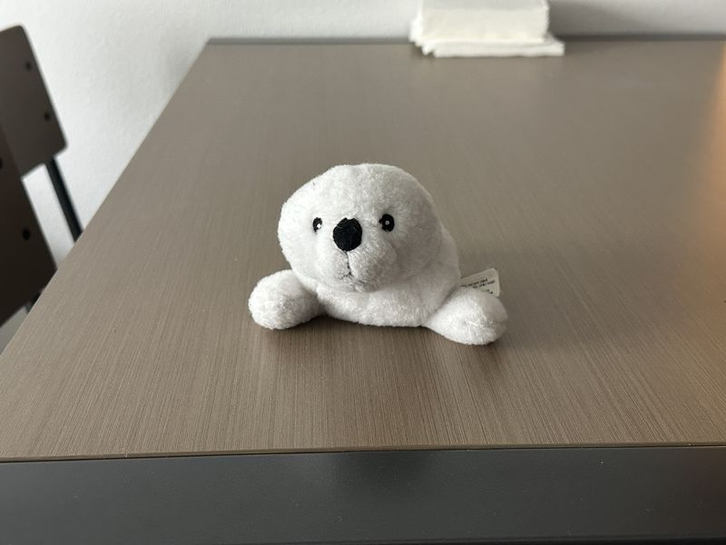
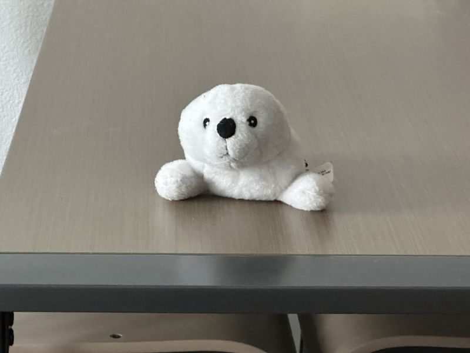

From portrait distortion to the dolly zoom, a study of how camera distance and focal length shape perspective
Part 1
Two portraits of the same person, framed to roughly the same face size. In the first, the camera is held close. In the second, the camera is several feet away and zoomed in.
Part 2
The same experiment, reversed, featuring Hilgard Hall at UC Berkeley: a distant zooming view of a building compresses depth, while a close wide-angle view reveals it.


Part 3
By moving the camera backward while simultaneously zooming in, the subject (a stuffed seal) stays roughly the same size in the frame, but the background changes dramatically, appearing to compress or expand.



